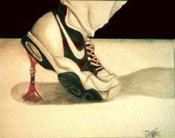

The boxes go all the way to the right; new things either go to right (if inline) or below (if block). Weird picture...
See what happens when you change browser size.Here is some text that's long enough to do something when browser size is changed.
And more text, back to same position.
Floating elements are fun to deal with.
Another floating element. See what fun? These are what you should be using in your second project. I hope you are looking at examples in the textbook!
Yet a third floating element. We now seem to have made 3 columns!
A fourth column, as long as the window is wide enough!
This is probably not where you want it! You can use fixed width or liquid layouts for your projects; see many more examples in the book.